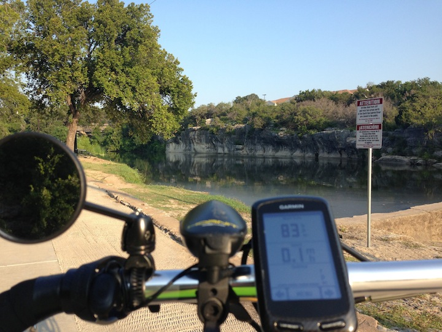

P-38 Easy recovery ride
31 Aug 2013

Finally, a week after Hotter ’N Hell Hundred I woke up this morning without a headache and my neck and shoulders were relaxed. So I took off for and easy ride on the P-38 down the local bike path to the Blue Hole park in Georgetown TX. Lots of people on the MUP. Nice easy ride enjoying the scenery.
http://connect.garmin.com/modern/activity/368071270
Tomorrow if still feeling good I’ll take the P-38 on a longer ride out to the country.